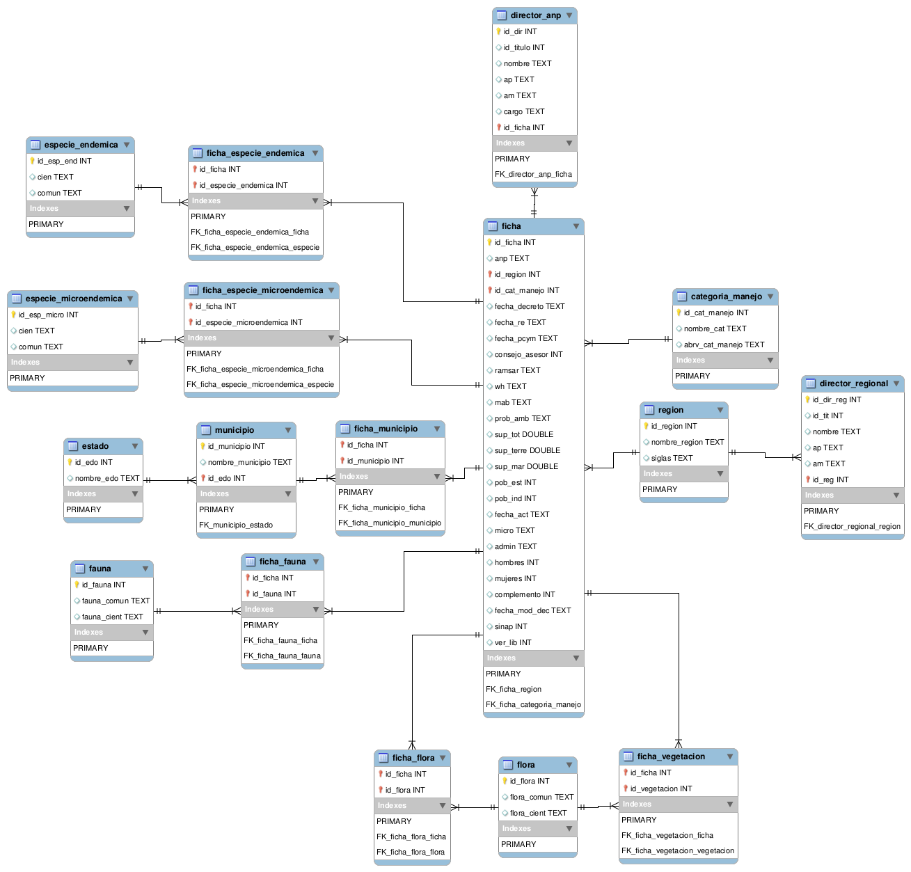

Mockups
Esta es la lista de mockups usados para el análisis de requerimientos. Para ver un documento mas estructurado por favor vea info/mockups.json.
Códigos de colores
| 1) La respuesta ya esta lista: | |
|---|---|
| 2) Este servicio fue creado en vano: | |
| 3) La respuesta sera identica, pero la logica sera reformada: | |
| 4) El servicio esta en desarrollo: | |
| 5) | |
Exposición de servicios ANP
Los servicios aquí expuestos fueron inferidos tras el análisis de los mockups de la plataforma y un diagrama provisto por el equipo de diseño.
A continuación se van a enumerar los servicios que provee el backend. Para ver un documento mas estructurado por favor vea info/services.json.
-
{{service.TYPE}}:
{{service.description}}
{{service.description}}{{service.description}}
{{group.groupName}}
Modelo de datos.
A continuación se muestran los test de la plataforma. Para ver un documento mas estructurado por favor vea info/tests.json.
- {{test.TYPE}}: {{test.description}}
{{group.groupName}}
A continuación se van a enumerar los assets de la plataforma y donde fueron almacenado. Para ver un documento mas estructurado por favor vea info/assets.json.